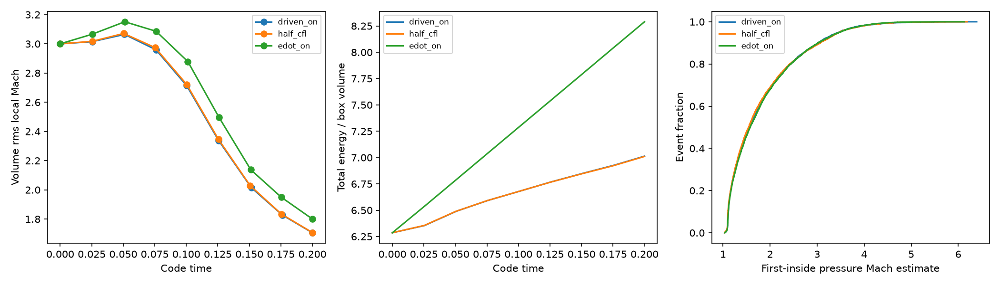

Ordinary native accel_rms and edot forcing is allowed, with no extra opt-in. 30 local engineering checks passed; scientific sign-off remains pending.

Left: Initial Mach3 periodic32³ box,4096particles,t=.2. Both modes remain supersonic at the end; this is an evolving short box, not a stationary ensemble. Middle: Native forcing adds energy; actual work and known RK2 source bias both contribute. Right: Completed numerical-encounter strength estimates, excluding right-censored open episodes; no certified physical shock catalogue.
Accel_rms counts7063completed+556open; half-CFL7744+520. Edot10 counts7357+479. The native shear gas-energy physical oracle still fails, without blocking operational forcing.
Full explanation, methods and rerun commands · Exact results · Exact-code verification